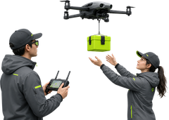
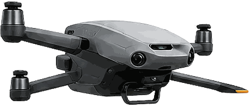

You order, a pro handles it
Pick a service and pay. A certified DRON operator does the flying — you never touch the drone.

A verified, insured operator
The moment you pay you see their name, photo and live position. Someone accountable is on the way.
What the drone does — and doesn't
It flies a set route, keeps its distance, and only records what your order needs. Brief low noise on take-off and landing; no filming of your neighbours.
